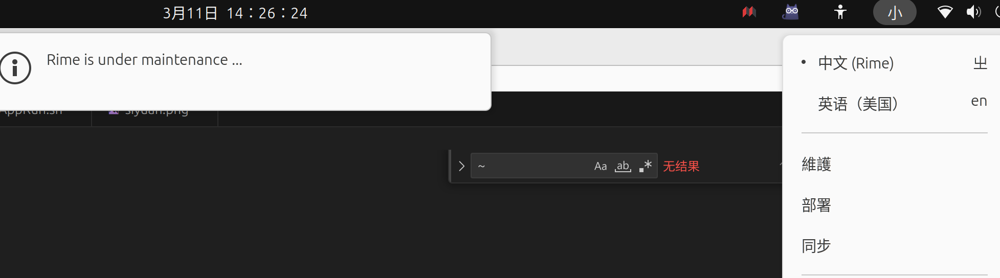

rime
ubuntu安装rime
shell
sudo apt-get install ibus-rime
# 安装双拼
sudo apt-get install rime-data-double-pinyin
#
ibus restart
# Ubuntu 22.04版本设置输入法在设置->-键盘->输入源->加号->汉语->中文（Rime）
windows 安装 - 小狼豪
在安装页面点击更多输入法，会弹出下面这样的命令窗口，输入 rime/rime-double-pinyin 获取双拼方案
自定义配置
rime输入法较为极客，他的ui界面基本上配置不了什么东西。
需要修改对应的文件才能进行配置（以 ubuntu 为例该配置文件位于：/home/用户名/.config/ibus/rime/default.custom.yaml，windows 在 %APPDATA%\Rime）
下面是我的配置，可以看出来这个 custom.yaml 文件就是简单的 patch 覆盖 default.yaml 中的选项
屏蔽 ctrl + ` （grave）快捷键，切换输入选项（和 vscode 打開終端冲突了，所以我改成了 f4）
yaml
patch:
schema_list:
- schema: luna_pinyin_simp # 简化字模式
- schema: double_pinyin_flypy # 小鹤双拼
switcher:
caption: 〔方案選單〕
hotkeys:
# 切換輸入法方案
# - Control+grave #grave = `
- Control+Shift+grave
- F4
save_options:
- full_shape
- ascii_punct
- simplification
- extended_charset
- zh_hant
- zh_hans
- zh_hant_tw
fold_options: true
abbreviate_options: true
option_list_separator: '／'
修改了这个配置文件需要点击重新部署，点击状态栏的 rime 图标点击部署即可。，在windows中直接开始菜单搜索重新部署就能看到

配置双拼
点击“獲取更多輸入方案...”，在打开的窗口中输入double-pinyin然后回车
输出中看到Everything is OK字样则表示安装成功
rime同步
windows： .\WeaselDeployer.exe /sync ，可以直接运行下面这个命令
powershell
& 'C:\ProgramData\Microsoft\Windows\Start Menu\Programs\小狼毫输入法\【小狼毫】用户资料同步.lnk'